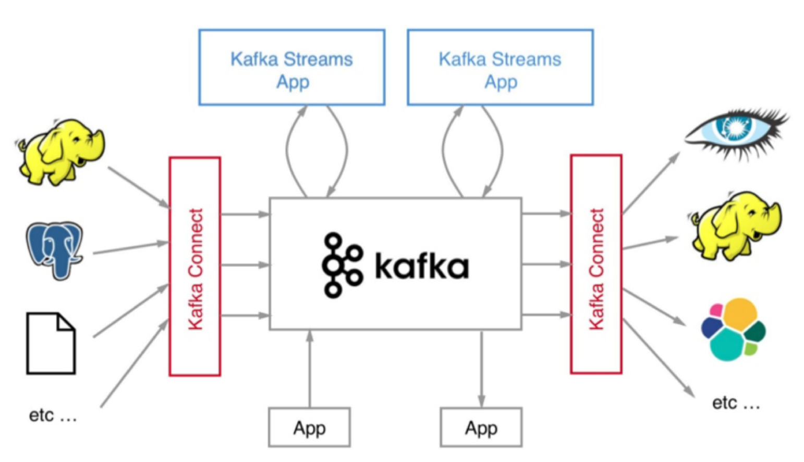

- 00 开篇词 为什么要学习Kafka？.md.html
- 01 消息引擎系统ABC.md.html
- 02 一篇文章带你快速搞定Kafka术语.md.html
- 03 Kafka只是消息引擎系统吗？.md.html
- 04 我应该选择哪种Kafka？.md.html
- 05 聊聊Kafka的版本号.md.html
- 06 Kafka线上集群部署方案怎么做？.md.html
- 07 最最最重要的集群参数配置（上）.md.html
- 08 最最最重要的集群参数配置（下）.md.html
- 09 生产者消息分区机制原理剖析.md.html
- 10 生产者压缩算法面面观.md.html
- 11 无消息丢失配置怎么实现？.md.html
- 12 客户端都有哪些不常见但是很高级的功能？.md.html
- 13 Java生产者是如何管理TCP连接的？.md.html
- 14 幂等生产者和事务生产者是一回事吗？.md.html
- 15 消费者组到底是什么？.md.html
- 16 揭开神秘的“位移主题”面纱.md.html
- 17 消费者组重平衡能避免吗？.md.html
- 18 Kafka中位移提交那些事儿.md.html
- 19 CommitFailedException异常怎么处理？.md.html
- 20 多线程开发消费者实例.md.html
- 21 Java 消费者是如何管理TCP连接的.md.html
- 22 消费者组消费进度监控都怎么实现？.md.html
- 23 Kafka副本机制详解.md.html
- 24 请求是怎么被处理的？.md.html
- 25 消费者组重平衡全流程解析.md.html
- 26 你一定不能错过的Kafka控制器.md.html
- 27 关于高水位和Leader Epoch的讨论.md.html
- 28 主题管理知多少.md.html
- 29 Kafka动态配置了解下？.md.html
- 30 怎么重设消费者组位移？.md.html
- 31 常见工具脚本大汇总.md.html
- 32 KafkaAdminClient：Kafka的运维利器.md.html
- 33 Kafka认证机制用哪家？.md.html
- 34 云环境下的授权该怎么做？.md.html
- 35 跨集群备份解决方案MirrorMaker.md.html
- 36 你应该怎么监控Kafka？.md.html
- 37 主流的Kafka监控框架.md.html
- 38 调优Kafka，你做到了吗？.md.html
- 39 从0搭建基于Kafka的企业级实时日志流处理平台.md.html
- 40 Kafka Streams与其他流处理平台的差异在哪里？.md.html
- 41 Kafka Streams DSL开发实例.md.html
- 42 Kafka Streams在金融领域的应用.md.html
- 加餐 搭建开发环境、阅读源码方法、经典学习资料大揭秘.md.html
- 结束语 以梦为马，莫负韶华！.md.html
04 我应该选择哪种Kafka？
在专栏上一期中，我们谈了 Kafka 当前的定位问题，Kafka 不再是一个单纯的消息引擎系统，而是能够实现精确一次（Exactly-once）处理语义的实时流处理平台。
你可能听说过 Apache Storm、Apache Spark Streaming 亦或是 Apache Flink，它们在大规模流处理领域可都是响当当的名字。令人高兴的是，Kafka 经过这么长时间不断的迭代，现在已经能够稍稍比肩这些框架了。我在这里使用了“稍稍”这个字眼，一方面想表达 Kafka 社区对于这些框架心存敬意；另一方面也想表达目前国内鲜有大厂将 Kafka 用于流处理的尴尬境地，毕竟 Kafka 是从消息引擎“半路出家”转型成流处理平台的，它在流处理方面的表现还需要经过时间的检验。
如果我们把视角从流处理平台扩展到流处理生态圈，Kafka 更是还有很长的路要走。前面我提到过 Kafka Streams 组件，正是它提供了 Kafka 实时处理流数据的能力。但是其实还有一个重要的组件我没有提及，那就是 Kafka Connect。
我们在评估流处理平台的时候，框架本身的性能、所提供操作算子（Operator）的丰富程度固然是重要的评判指标，但框架与上下游交互的能力也是非常重要的。能够与之进行数据传输的外部系统越多，围绕它打造的生态圈就越牢固，因而也就有更多的人愿意去使用它，从而形成正向反馈，不断地促进该生态圈的发展。就 Kafka 而言，Kafka Connect 通过一个个具体的连接器（Connector），串联起上下游的外部系统。
整个 Kafka 生态圈如下图所示。值得注意的是，这张图中的外部系统只是 Kafka Connect 组件支持的一部分而已。目前还有一个可喜的趋势是使用 Kafka Connect 组件的用户越来越多，相信在未来会有越来越多的人开发自己的连接器。

说了这么多你可能会问这和今天的主题有什么关系呢？其实清晰地了解 Kafka 的发展脉络和生态圈现状，对于指导我们选择合适的 Kafka 版本大有裨益。下面我们就进入今天的主题——如何选择 Kafka 版本？
你知道几种 Kafka？
咦？ Kafka 不是一个开源框架吗，什么叫有几种 Kafka 啊？ 实际上，Kafka 的确有好几种，这里我不是指它的版本，而是指存在多个组织或公司发布不同的 Kafka。你一定听说过 Linux 发行版吧，比如我们熟知的 CentOS、RedHat、Ubuntu 等，它们都是 Linux 系统，但为什么有不同的名字呢？其实就是因为它们是不同公司发布的 Linux 系统，即不同的发行版。虽说在 Kafka 领域没有发行版的概念，但你姑且可以这样近似地认为市面上的确存在着多个 Kafka“发行版”。
下面我就来梳理一下这些所谓的“发行版”以及你应该如何选择它们。当然了，“发行版”这个词用在 Kafka 框架上并不严谨，但为了便于我们区分这些不同的 Kafka，我还是勉强套用一下吧。不过切记，当你以后和别人聊到这个话题的时候最好不要提及“发行版”这个词 ，因为这种提法在 Kafka 生态圈非常陌生，说出来难免贻笑大方。
1. Apache Kafka
Apache Kafka 是最“正宗”的 Kafka，也应该是你最熟悉的发行版了。自 Kafka 开源伊始，它便在 Apache 基金会孵化并最终毕业成为顶级项目，它也被称为社区版 Kafka。咱们专栏就是以这个版本的 Kafka 作为模板来学习的。更重要的是，它是后面其他所有发行版的基础。也就是说，后面提到的发行版要么是原封不动地继承了 Apache Kafka，要么是在此之上扩展了新功能，总之 Apache Kafka 是我们学习和使用 Kafka 的基础。
2. Confluent Kafka
我先说说 Confluent 公司吧。2014 年，Kafka 的 3 个创始人 Jay Kreps、Naha Narkhede 和饶军离开 LinkedIn 创办了 Confluent 公司，专注于提供基于 Kafka 的企业级流处理解决方案。2019 年 1 月，Confluent 公司成功融资 D 轮 1.25 亿美元，估值也到了 25 亿美元，足见资本市场的青睐。
这里说点题外话， 饶军是我们中国人，清华大学毕业的大神级人物。我们已经看到越来越多的 Apache 顶级项目创始人中出现了中国人的身影，另一个例子就是 Apache Pulsar，它是一个以打败 Kafka 为目标的新一代消息引擎系统。至于在开源社区中活跃的国人更是数不胜数，这种现象实在令人振奋。
还说回 Confluent 公司，它主要从事商业化 Kafka 工具开发，并在此基础上发布了 Confluent Kafka。Confluent Kafka 提供了一些 Apache Kafka 没有的高级特性，比如跨数据中心备份、Schema 注册中心以及集群监控工具等。
3. Cloudera/Hortonworks Kafka
Cloudera 提供的 CDH 和 Hortonworks 提供的 HDP 是非常著名的大数据平台，里面集成了目前主流的大数据框架，能够帮助用户实现从分布式存储、集群调度、流处理到机器学习、实时数据库等全方位的数据处理。我知道很多创业公司在搭建数据平台时首选就是这两个产品。不管是 CDH 还是 HDP 里面都集成了 Apache Kafka，因此我把这两款产品中的 Kafka 称为 CDH Kafka 和 HDP Kafka。
当然在 2018 年 10 月两家公司宣布合并，共同打造世界领先的数据平台，也许以后 CDH 和 HDP 也会合并成一款产品，但能肯定的是 Apache Kafka 依然会包含其中，并作为新数据平台的一部分对外提供服务。
特点比较
Okay，说完了目前市面上的这些 Kafka，我来对比一下它们的优势和劣势。
1. Apache Kafka
对 Apache Kafka 而言，它现在依然是开发人数最多、版本迭代速度最快的 Kafka。在 2018 年度 Apache 基金会邮件列表开发者数量最多的 Top 5 排行榜中，Kafka 社区邮件组排名第二位。如果你使用 Apache Kafka 碰到任何问题并提交问题到社区，社区都会比较及时地响应你。这对于我们 Kafka 普通使用者来说无疑是非常友好的。
但是 Apache Kafka 的劣势在于它仅仅提供最最基础的组件，特别是对于前面提到的 Kafka Connect 而言，社区版 Kafka 只提供一种连接器，即读写磁盘文件的连接器，而没有与其他外部系统交互的连接器，在实际使用过程中需要自行编写代码实现，这是它的一个劣势。另外 Apache Kafka 没有提供任何监控框架或工具。显然在线上环境不加监控肯定是不可行的，你必然需要借助第三方的监控框架实现对 Kafka 的监控。好消息是目前有一些开源的监控框架可以帮助用于监控 Kafka（比如 Kafka manager）。
总而言之，如果你仅仅需要一个消息引擎系统亦或是简单的流处理应用场景，同时需要对系统有较大把控度，那么我推荐你使用 Apache Kafka。
2. Confluent Kafka
下面来看 Confluent Kafka。Confluent Kafka 目前分为免费版和企业版两种。前者和 Apache Kafka 非常相像，除了常规的组件之外，免费版还包含 Schema 注册中心和 REST proxy 两大功能。前者是帮助你集中管理 Kafka 消息格式以实现数据前向 / 后向兼容；后者用开放 HTTP 接口的方式允许你通过网络访问 Kafka 的各种功能，这两个都是 Apache Kafka 所没有的。
除此之外，免费版包含了更多的连接器，它们都是 Confluent 公司开发并认证过的，你可以免费使用它们。至于企业版，它提供的功能就更多了。在我看来，最有用的当属跨数据中心备份和集群监控两大功能了。多个数据中心之间数据的同步以及对集群的监控历来是 Kafka 的痛点，Confluent Kafka 企业版提供了强大的解决方案帮助你“干掉”它们。
不过 Confluent Kafka 的一大缺陷在于，Confluent 公司暂时没有发展国内业务的计划，相关的资料以及技术支持都很欠缺，很多国内 Confluent Kafka 使用者甚至无法找到对应的中文文档，因此目前 Confluent Kafka 在国内的普及率是比较低的。
一言以蔽之，如果你需要用到 Kafka 的一些高级特性，那么推荐你使用 Confluent Kafka。
3. CDH/HDP Kafka
最后说说大数据云公司发布的 Kafka（CDH/HDP Kafka）。这些大数据平台天然集成了 Apache Kafka，通过便捷化的界面操作将 Kafka 的安装、运维、管理、监控全部统一在控制台中。如果你是这些平台的用户一定觉得非常方便，因为所有的操作都可以在前端 UI 界面上完成，而不必去执行复杂的 Kafka 命令。另外这些平台提供的监控界面也非常友好，你通常不需要进行任何配置就能有效地监控 Kafka。
但是凡事有利就有弊，这样做的结果是直接降低了你对 Kafka 集群的掌控程度。毕竟你对下层的 Kafka 集群一无所知，你怎么能做到心中有数呢？这种 Kafka 的另一个弊端在于它的滞后性。由于它有自己的发布周期，因此是否能及时地包含最新版本的 Kafka 就成为了一个问题。比如 CDH 6.1.0 版本发布时 Apache Kafka 已经演进到了 2.1.0 版本，但 CDH 中的 Kafka 依然是 2.0.0 版本，显然那些在 Kafka 2.1.0 中修复的 Bug 只能等到 CDH 下次版本更新时才有可能被真正修复。
简单来说，如果你需要快速地搭建消息引擎系统，或者你需要搭建的是多框架构成的数据平台且 Kafka 只是其中一个组件，那么我推荐你使用这些大数据云公司提供的 Kafka。
小结
总结一下，我们今天讨论了不同的 Kafka“发行版”以及它们的优缺点，根据这些优缺点，我们可以有针对性地根据实际需求选择合适的 Kafka。下一期，我将带你领略 Kafka 各个阶段的发展历程，这样我们选择 Kafka 功能特性的时候就有了依据，在正式开启 Kafka 应用之路之前也夯实了理论基础。
最后我们来复习一下今天的内容：
- Apache Kafka，也称社区版 Kafka。优势在于迭代速度快，社区响应度高，使用它可以让你有更高的把控度；缺陷在于仅提供基础核心组件，缺失一些高级的特性。
- Confluent Kafka，Confluent 公司提供的 Kafka。优势在于集成了很多高级特性且由 Kafka 原班人马打造，质量上有保证；缺陷在于相关文档资料不全，普及率较低，没有太多可供参考的范例。
- CDH/HDP Kafka，大数据云公司提供的 Kafka，内嵌 Apache Kafka。优势在于操作简单，节省运维成本；缺陷在于把控度低，演进速度较慢。